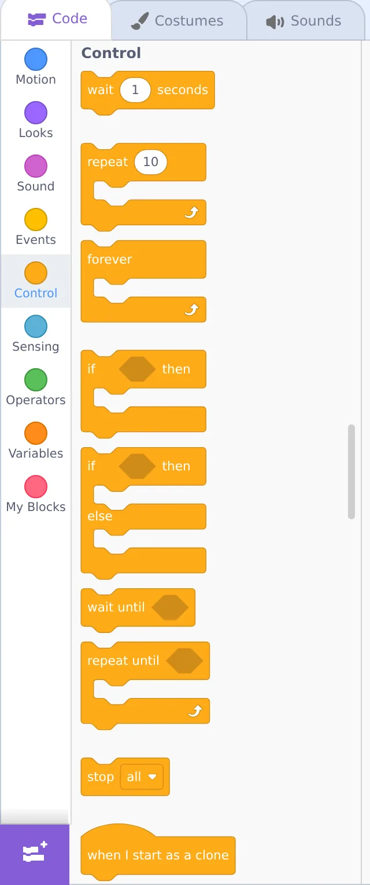

🔁 Lesson 2.2: Loops — Making Things Repeat
Why write a block ten times when you can tell Scratch "do this ten times"? Loops are the first idea that makes kids feel like real programmers — and they're the secret behind every animation and game.
📚 What You'll Learn
- Use the repeat and forever loops
- Understand what goes inside a loop vs. outside it
- Build a smooth walking animation with a loop
- Recognize and fix a runaway "forever" loop
Estimated Time: 35 minutes • Builds on: Sequences (2.1)
In This Lesson
🎓 Learn It: Why loops exist
Imagine you want the cat to take 20 little steps. You could drag in 20 "move" blocks. Painful — and if you wanted 21, you'd start over. A loop says "do this again and again" so one block replaces twenty.
😩 The hard way
…and 16 more. No thanks.
😎 The loop way
One loop. Change 20 to 100 in a heartbeat.
Loops live in the orange Control category. Notice they're C-shaped — blocks you place inside the "mouth" of the C get repeated.
🎓 Learn It: repeat vs. forever

| Loop | What it does | Use it when… |
|---|---|---|
| repeat 10 | Runs the inside blocks a set number of times, then moves on | You know how many times (blink 3 times, take 20 steps) |
| forever | Runs the inside blocks endlessly until you press stop | Something should always be happening (a heartbeat, constant fall, always checking a key) |
⚠️ "forever" never ends on its own
Any block placed after a forever loop will never run — the program never gets past it. That's not a bug in Scratch; it's the loop doing its job. Use the red stop to end it.
🎓 Learn It: What goes inside the loop
This is the idea kids (and adults!) trip on: only the blocks inside the C repeat. Compare:
Say is inside → repeats
"Ha!" three times.
Say is outside → runs once
Moves 3×, then says "Done!" once.
🌱 Growth mindset: the first "big idea" often takes a few tries
Sequences feel obvious; loops are the first idea in this course that asks your brain to picture something happening over and over that you can't see all at once. If "inside vs. outside the C" takes a couple of rereads — or a couple of wrong runs — that's completely normal. Understanding tends to arrive in steps: it feels fuzzy, then fuzzy, then suddenly clear. If you hit a flat spot, don't push harder; build the tiny "Ha! Ha! Ha!" example again and watch it. When your child gets stuck here, tell them honestly: "This one took me a few tries too. We don't get it yet — let's run it and watch what happens."
🛠️ Try It: A real walking cat
In Module 1 the cat "jumped" across. With a loop we get smooth walking. The cat has two costumes; alternating them while moving looks like real steps.
- Start with when 🟩 clicked, then go to x: -200 y: 0 (start at the left).
- Add a repeat 20 loop (Control).
- Inside the loop, add: move 20 steps, next costume, and wait 0.1 seconds.
Press the green flag: the cat strides across the stage, legs moving. That's your first animation! The wait 0.1 sets the walk speed — smaller is faster.
💡 Challenge: make it pace back and forth forever
Wrap the whole walk in a forever loop and add if on edge, bounce (Motion) plus set the sprite's rotation style to "left-right" so it flips instead of going upside-down. Now it patrols endlessly until you hit stop.
💬 Teach It: Loops all around us
Loops are everywhere in daily life — naming them together makes the abstract idea stick.
Spot-the-loop game
"Brushing teeth is a loop: scrub, scrub, scrub — repeat until clean! Can you think of another loop? What about the wheels on the car, or a song's chorus?"
- Stirring a pot • jumping jacks • a ticking clock • steps while walking • a chorus repeating.
The powerful question
When your child copy-pastes the same block many times, don't correct — ask:
"That works! Is there a block that could do all of those for us at once, so we don't have to make so many?"
Letting them discover the loop is far stickier than telling them.
👧 Ages 5–7
Stick to repeat with small numbers they can count out loud. "Repeat 3 — let's count the jumps!"
🧒 Ages 8–11
Great age for the walking project. Let them tune the wait number and feel how it changes speed.
🧑 Ages 12+
Introduce a loop inside a loop (nesting). E.g., repeat 4 { repeat 10 { move; wait } turn 90 } to trace a square.
⚠️ Common kid bug
They drop a block below the loop expecting it to repeat, or they trap the whole program in a forever so a later block "does nothing." Point at the C-shape: "Is your block inside the mouth, or outside?"
🎯 Quick Check
Question 1: You want the cat to blink exactly 5 times. Best loop?
Question 2: Only which blocks repeat in a loop?
Question 3: A block placed after a "forever" loop will…
📓 Learning Journal
Take five minutes to write it down
Date a new entry, label it "Lesson 2.2," and jot a few lines for each prompt. Sketching a C-shaped loop with blocks inside is a perfectly good answer.
- Key concepts: In your own words, what's the difference between repeat and forever? Why does it matter which blocks sit inside the C?
- What clicked: Was there a moment the walking cat made loops "make sense" — maybe when the legs started moving?
- Questions & confusion: What still feels tricky? Loops inside loops? How the wait time changes the speed? Write it down.
- Ideas to try: Name one thing you'd like to make repeat — a spinning star, a bouncing ball, a song that loops.
- Progress & feelings: What everyday "loops" did you and your child spot together? How did your child react when the cat finally walked?
💡 Teach It tip: Ask your child to draw a "loop" from their own day in their coder's notebook — brushing teeth, a jump-rope rhyme, a song chorus — with an arrow going back to the start. Then ask: "Is that a repeat 10, or a forever?"
Summary & What's Next
🎓 Key Takeaways
- repeat runs a set number of times; forever runs until you press stop.
- Loops are C-shaped — only the blocks inside repeat.
- Alternating costumes inside a loop creates smooth animation.
- Let kids discover loops by asking "could one block do all these?"
🏅 What You've Accomplished
- Replaced a pile of copy-pasted blocks with a single loop
- Learned when to use repeat and when to use forever
- Built your first real animation — a walking cat
- Helped your child spot loops in everyday life
📋 Before the Next Lesson
- Save your walking-cat project
- Try the pace-back-and-forth challenge with your child
- Write your journal entry
❓ Common Questions at This Stage
My forever loop won't stop. Did we break something?
Not at all — that's exactly what forever means. Click the red stop sign above the stage and everything halts. If you want the action to end on its own, use repeat with a number instead.
Why does the cat flip upside-down when it bounces off the edge?
By default a sprite rotates all the way around when it turns. Add the Motion block set rotation style [left-right] at the top of your script (or pick the left-right option in the sprite's direction settings), and it will simply face the other way instead.
The cat zooms across in a blink. How do I slow it down?
Make sure there's a wait block inside the loop, then make it longer (try 0.2 or 0.3). You can also use smaller moves — say, 10 steps instead of 20 — with more repeats.
🔭 Looking Ahead
So far the cat does what we plan. In Lesson 2.3: Conditionals & Sensing — Making Choices it starts making decisions — reacting to key presses and touches with if/then and sensing blocks. This is where projects become interactive.
💛 Encouragement for the Journey
Loops are one of the biggest ideas in all of programming, and you just used one to bring a character to life. If it still feels a little wobbly, that's fine — you'll use loops in nearly every lesson from here on, and each time they'll feel more natural.